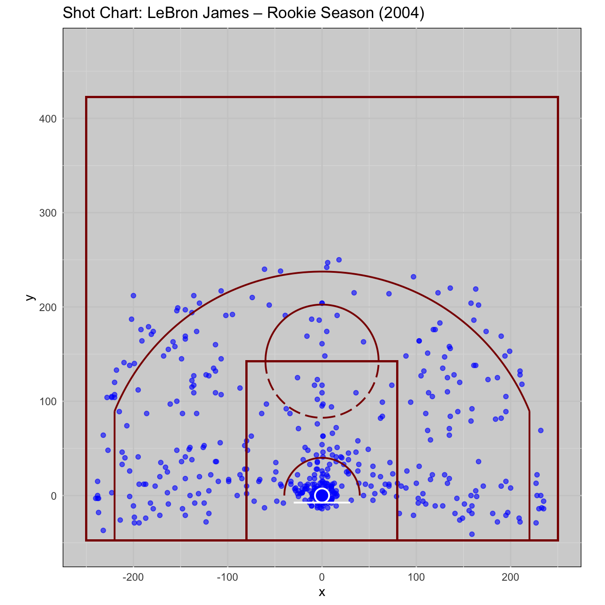
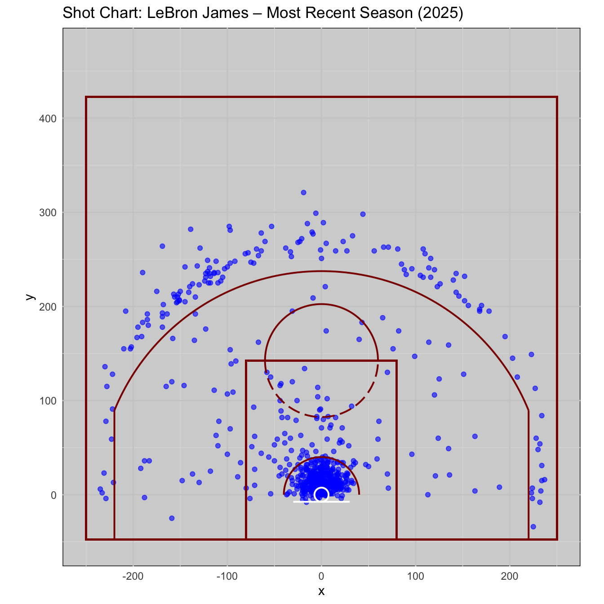
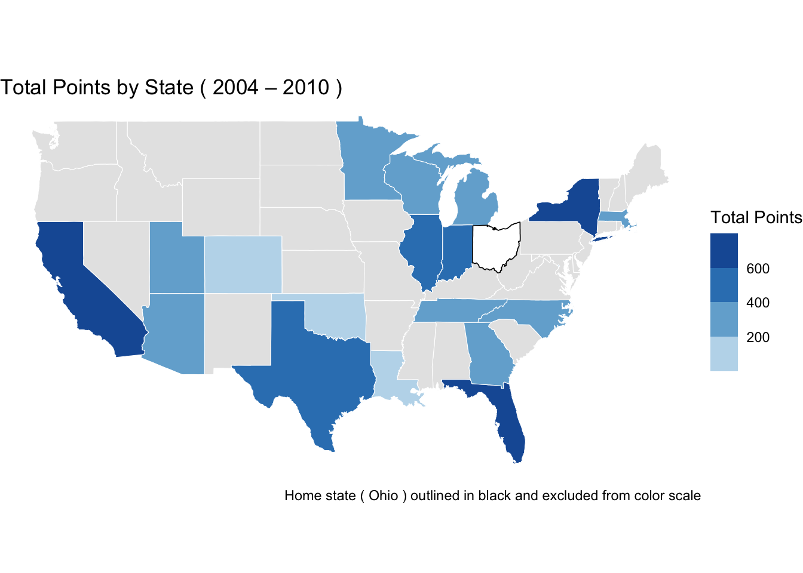
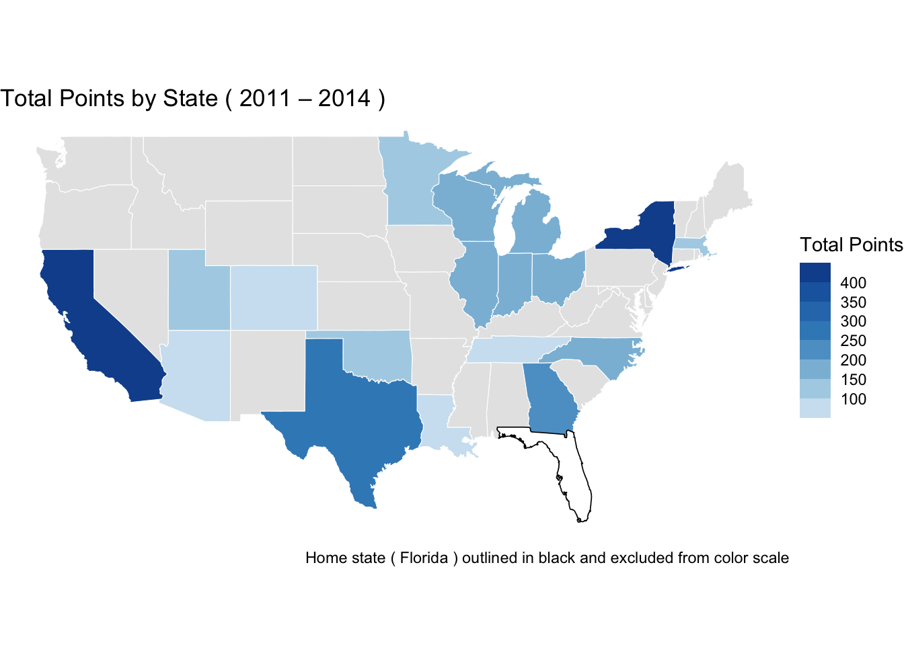

Our Glorious King
Lebron James
Abstract
LeBron’s legacy is large on the statsheet, but extends much further than just putting the ball in the basket. Through his greatness, he has broken records, cultivated lifelong friendships through teammates, and made those around him into better players. His over 20 year career has changed fundamentally changed the game of basketball, which is displayed through the evolution of his playstyle.
Over the course of two decades, LeBron James has had one of the most enduring and shape-shifting careers in NBA history. From his debut with the Cleveland Cavaliers in 2003 to his current tenure with the Los Angeles Lakers, LeBron has not only won championships and accumulated accolades — he has continually redefined his role to fit the moment.
Across four distinct eras, LeBron adapted to new teammates, coaching systems, and league-wide changes in playing style:
Cleveland (2003–2010): As a rising star on a young Cavs roster, LeBron quickly became the central offensive engine. His play in this era was characterized by explosive drives, high usage, and sheer athleticism. He often carried the scoring load and functioned as a point-forward before the term became widely used.
Miami (2010–2014): Teaming up with Dwyane Wade and Chris Bosh, LeBron entered a more structured, efficient role. In Miami, he developed a reliable post game, improved his off-ball awareness, and committed to defensive intensity. This era brought his first championships and marked a shift toward smarter, more selective shot-taking.
Cleveland (2014–2018): Returning to Cleveland with championship experience, LeBron transitioned into more of a distributor while still scoring at a high level. Surrounded by sharpshooters and secondary creators like Kyrie Irving and Kevin Love, he became the central decision-maker in a fast-paced, spacing-oriented offense that culminated in a title in 2016.
Los Angeles (2018–present): In LA, LeBron entered a veteran phase. His role has been fluid — at times the lead scorer, at other times the facilitator, and often both. His game now leans on craft, vision, and positional versatility. He’s added range and adapted to a more three-heavy league, while mentoring younger players and taking over when needed.
This project explores how LeBron’s game has evolved — not just over time, but across geographic and strategic contexts. We analyze his career from four perspectives:
- Shot selection: How LeBron’s scoring profile has shifted across the years, from rim attacks to perimeter shooting.
- Scoring geography: A breakdown of which states saw the most production from LeBron, and how this aligns with his team locations.
- Teammate roles: Using statistical clustering, we explore the types of players LeBron has worked with, and how that influenced his on-court responsibilities.
- Career network: A graph-based look at who he’s played the most games with, and how those connections span multiple teams.
Together, these views help explain how LeBron has stayed not just relevant, but dominant, by evolving alongside — and often ahead of — the game itself.
Shot Selection Over Time
LeBron’s offensive approach has evolved in clear, measurable ways over the course of his career. Early on, he relied heavily on athleticism — attacking the basket in transition, posting up smaller defenders, and creating mid-range looks off the dribble. In those early Cleveland years, much of the offense was built around his ability to collapse defenses and finish through contact.
As he moved into his Miami years, and later returned to Cleveland, his shot selection became more deliberate. He still attacked the paint, but he began incorporating more post play, baseline turnarounds, and selective three-point shooting — especially from the corners. With a more balanced roster around him, LeBron didn’t need to force as many contested drives and was able to read the floor more patiently.
In Los Angeles, LeBron’s game has become even more perimeter-oriented. Whether due to age, roster fit, or broader shifts in league strategy, he now shoots threes at a higher volume and uses off-ball movement to find cleaner looks. While he still gets to the rim when needed, he often defers to teammates in the regular season and picks his spots more carefully.
The charts below provide a snapshot of this evolution — comparing his rookie season shot locations to those from his most recent campaign.
- Track the shift from interior-heavy scoring to a more balanced perimeter approach
- Observe changes in shot clustering by zone
- Reflect on how age, team context, and league-wide trends have reshaped his role


Spatial Analysis - LeBron’s Scoring by Era
LeBron’s scoring impact isn’t just about how much — it’s also about where. Over the course of his career, he’s played in nearly every NBA arena, logging minutes and putting up points across the country. His production by state reflects not only the teams he played for, but also the matchups, rivalries, and playoff runs that defined each era.
In his first stint with the Cavaliers, most of his scoring came in the Eastern Conference, especially in cities like New York, Chicago, and Boston — places that often hosted nationally televised games and postseason series. In Miami, his offensive efficiency increased, and he put up consistently strong road numbers, particularly against high-profile teams in both conferences. His return to Cleveland saw a similar pattern, but with an even greater focus on pacing and spacing, which opened up more perimeter opportunities away from home.
Since joining the Lakers, LeBron’s West Coast presence has expanded. Naturally, he scores the most in California, but he’s also produced heavily in Western Conference cities like Denver, Phoenix, and Dallas — arenas that have hosted some of his biggest performances in recent years.
The maps below break down total points by U.S. state for each of LeBron’s four team eras:
- Cleveland (2004–2010, 2015–2018)
- Miami (2011–2014)
- Los Angeles (2019–2025)
These visualizations help highlight:
- Where LeBron consistently produced the most points — both home and away
- Which states show up as high-volume territories due to playoff frequency or conference alignment
- How geography, travel, and conference play shape long-term scoring patterns
Some information in one tab
Warning: Using `size` aesthetic for lines was deprecated in ggplot2 3.4.0.
ℹ Please use `linewidth` instead.
Some information in a different tab

The charts below provide a snapshot of this evolution — comparing his rookie season shot locations to those from his most recent campaign.
- Track the shift from interior-heavy scoring to a more balanced perimeter approach
- Observe changes in shot clustering by zone
- Reflect on how age, team context, and league-wide trends have reshaped his role
Rookie Season (2004)

Most Recent Season (2025)